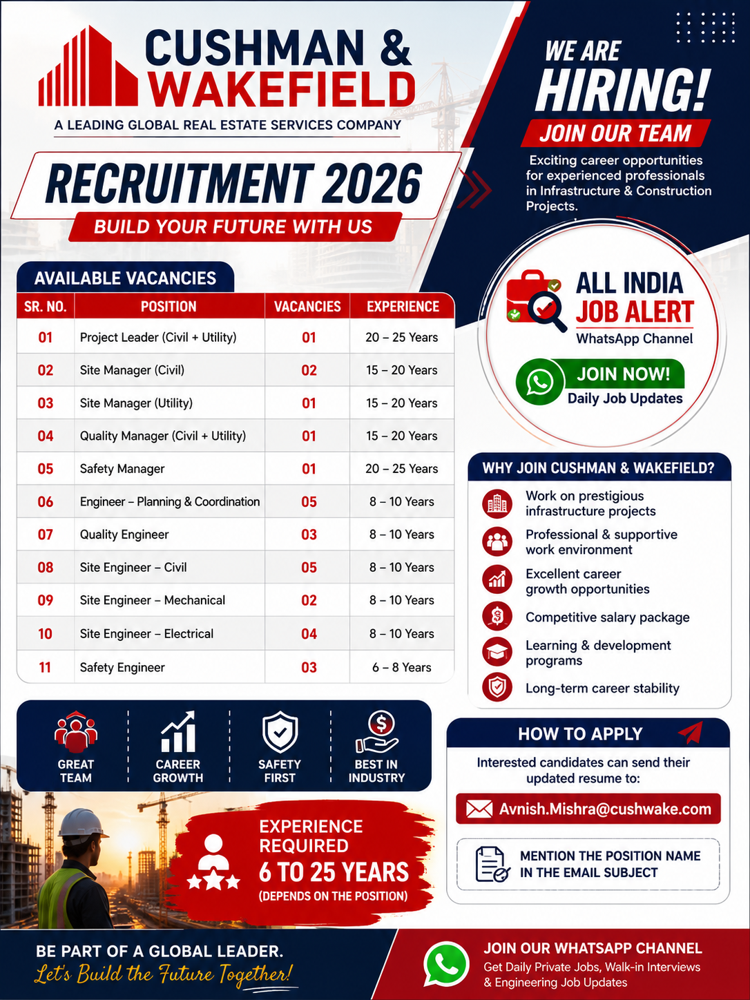

Cushman & Wakefield has announced a new recruitment drive for experienced construction and engineering professionals in 2026. The company is inviting applications for multiple vacancies including Project Leader, Site Manager, Quality Manager, Safety Manager, Planning Engineer, Site Engineer (Civil, Mechanical and Electrical) and Safety Engineer. Candidates having relevant experience in infrastructure, utility and civil construction projects are encouraged to apply.
This recruitment is an excellent opportunity for professionals looking to work with one of the world's leading real estate and project management companies. Selected candidates will get the opportunity to work on large infrastructure and construction projects while building a long-term career in a professional environment.
| Position | Vacancies | Experience |
|---|---|---|
| Project Leader (Civil + Utility) | 01 | 20-25 Years |
| Site Manager (Civil) | 02 | 15-20 Years |
| Site Manager (Utility) | 01 | 15-20 Years |
| Quality Manager (Civil + Utility) | 01 | 15-20 Years |
| Safety Manager | 01 | 20-25 Years |
| Engineer – Planning & Coordination | 05 | 8-10 Years |
| Quality Engineer | 03 | 8-10 Years |
| Site Engineer – Civil | 05 | 8-10 Years |
| Site Engineer – Mechanical | 02 | 8-10 Years |
| Site Engineer – Electrical | 04 | 8-10 Years |
| Safety Engineer | 03 | 6-8 Years |
Candidates applying for Cushman & Wakefield Recruitment 2026 should have relevant experience in civil construction, infrastructure, utility projects or project management. Applicants must possess strong technical knowledge, communication skills and the ability to work with multidisciplinary teams. Candidates with experience in large commercial, industrial or infrastructure projects will be preferred.
Selected candidates will be responsible for planning, executing and monitoring construction activities while ensuring quality and safety standards are maintained. Different positions have different responsibilities, but all employees are expected to contribute towards successful project completion.
Working with Cushman & Wakefield provides excellent career growth opportunities. Employees get exposure to large-scale infrastructure and construction projects while working with experienced professionals. The company offers a professional work environment, learning opportunities and competitive salary packages based on experience and skills.
Interested and eligible candidates can send their updated resume to the official HR email address mentioned below. Before applying, ensure that your resume contains your latest educational qualifications, work experience and contact details. Mention the position name in the email subject for quick shortlisting.
Email: Avnish.Mishra@cushwake.com
1. Which company is hiring?
Cushman & Wakefield.
2. What positions are available?
Project Leader, Site Manager, Quality Manager, Safety Manager, Planning Engineer, Site Engineers and Safety Engineer.
3. What is the required experience?
6 to 25 years depending on the position.
4. What is the application mode?
Email application.
5. What is the official email ID?
Avnish.Mishra@cushwake.com
6. Is this a full-time job?
Yes.
7. Is salary mentioned?
Salary will be based on company policy and candidate experience.
8. Who can apply?
Experienced Civil, Mechanical, Electrical and Safety professionals.
9. What documents are required?
Updated resume, educational certificates, experience certificates and ID proof.
10. Will only shortlisted candidates be contacted?
Yes.
Get daily private jobs, government jobs, walk-in interviews and engineering recruitment updates directly on WhatsApp.
Join WhatsApp Channel